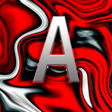

Animación de Carousel


GSAP (GreenSock Animation Platform) es una herramienta potente para crear animaciones web de alto rendimiento y con gran control, tanto en objetos como en textos.
Bienvenidos a la demostración de animaciones con GSAP, donde cada palabra aparece de manera suave y con un efecto de desenfoque que se desvanece.
En el siguiente timeline se muestra el orden de animación:
1. Cuadrado Violeta: se desplaza de izquierda a derecha.
2. Cuadrado Verde: se mueve de arriba hacia abajo (con efecto yoyo).
3. Cuadrado Azul: se desliza en diagonal, desde la esquina superior izquierda a la inferior derecha.
El siguiente elemento se animará al entrar en la vista: incrementa su opacidad y se desplaza a su posición original.
Pasa el mouse sobre el siguiente elemento para ver cómo se escala y cambia de color, retornando a su estado original al quitar el cursor.
En este ejemplo, se controla la animación de un elemento mediante botones para reproducir, pausar o invertir el timeline.
Haz click en la imagen para verla rebotar.

Observa cómo el fondo de esta sección cambia de gradiente de forma continua.
Este bloque se mueve de izquierda a derecha al hacer scroll, creando un efecto parallax.
Controles globales para las animaciones: